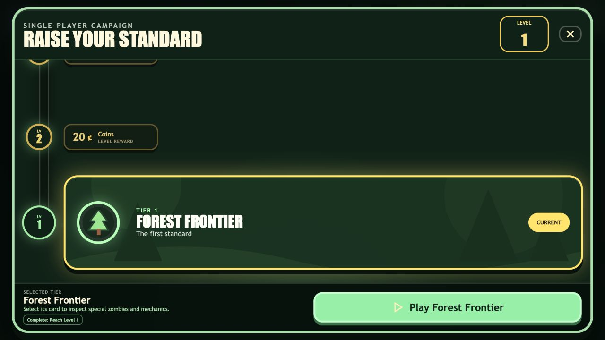
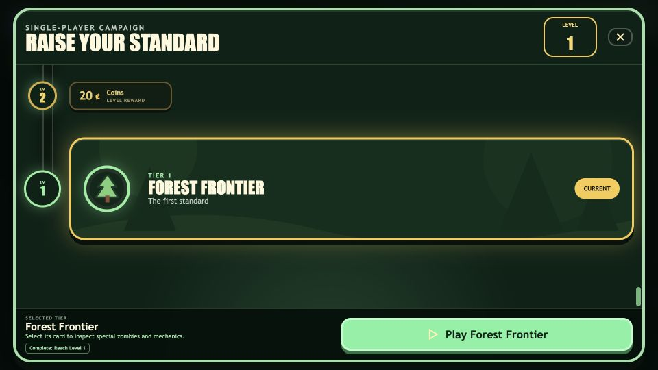

Night persistence, daytime decay
Radstalker zones hold through night, shrink for 50 daytime seconds, fade with their splatters in the final 10%, and keep touched resources radiated.
FlagFort implementation handoff
The requested systems now share deterministic status, projectile, burst, asset, and progression foundations. The complete test, build, visual validation, and CrazyGames-size browser gates are green.
Outcome
High-risk behaviors are centralized and tested at their real interaction boundaries.
Radstalker zones hold through night, shrink for 50 daytime seconds, fade with their splatters in the final 10%, and keep touched resources radiated.
Editable shared parasite and infesting-node art replaces placeholders. Re-entry shakes, organic strike audio, full Lurker healing, fireflies, and structure-skipping Sporecaster shots are complete.
Aether Gunner and diamond-node bursts apply a shared one-second, non-damaging Time Lock. Chronoforge rewinds the full configured night while preserving defender damage and broken boss state.
Pause and resume preserve the active music instance, phase, tier, and position without duplicate playback. Reverse clock ticks use the existing audio architecture.
Turret projectile lifetime reaches effective upgraded range. Springjack now has a 10-second timer and reversed countdown ring. Desert-and-later specials scale 20% without boss resizing.
Radiation retains composited field rendering, Mire weather uses only 24 slow particles, and new statuses and bursts reuse existing update and render paths.
Campaign
Unlocks land every fourth level, with exactly three coin rewards between them.
Repeat unlock levels: 1, 5, 9, 13, 17, 21, 25, 29. New reward IDs include legacy mappings so one-time claims and unlock persistence continue safely.
Browser evidence
The compact breakpoint includes added bottom clearance so the current tier card never hides beneath the selected-tier footer.


Verification
All required repository checks and focused runtime checks completed successfully.
| Gate | Evidence | Status |
|---|---|---|
| Automated behavior | npm test: 33 files and 497 tests, including focused radiation, music, range, Mire, Sporecaster, Time Lock, diamond burst, and Chronoforge cases. | Passed |
| Production compile | npm run build: TypeScript and Vite production bundle completed. | Passed |
| Editable artwork | npm run visual:validate: 361 SVGs, 41 card illustrations, 75 gameplay assets, and 20 structure groups. | Passed |
| Responsive UI | Campaign ladder inspected at 1280x720 and 960x540 with zero document overflow. | Passed |
| Runtime health | Local browser console checked after campaign interaction and responsive resizing. | No issues |
| Patch hygiene | git diff --check returned clean. | Passed |
No canonical audio files were changed. Existing audio assets were registered or reused through the shared audio event system, and gameplay-affecting randomness remains seeded.